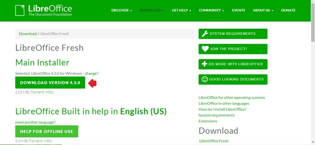
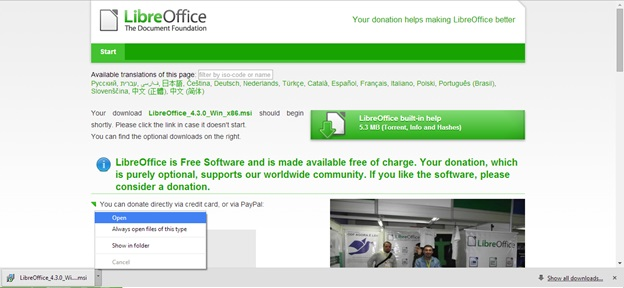
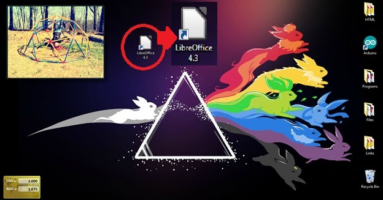

Click DOWNLOAD VERSION 4.3.0 located under Main Installer (Figure 2).
Figure 1. Figure 2: Main Installer list from which to select DOWNLOAD VERSION 4.3.0.

A Save As dialog box will open: select the desired location to download LibreOffice and click Save.
NOTE: Your browser will navigate to a new screen from which the dialog box will pop up automatically. If you chose, you will be able to make a donation from this page.
From the download bar, open the downloaded file when it is complete (Figure 3).
Figure 2. Figure 3: Opening the download in the download bar once it is complete.

When prompted to run file, click Run.
Click Next from the installation window once available.
Select your desired installation settings from the window when prompted to complete installation.
NOTE: It may be necessary to restart your computer to fully complete installation.
Example
Once completed, LibreOffice will be accessible from the Start menu or, if selected, a desktop icon will be available (Figure 4).
Figure 3. Figure 4: Desktop icon for LibreOffice after completed download and installation.
